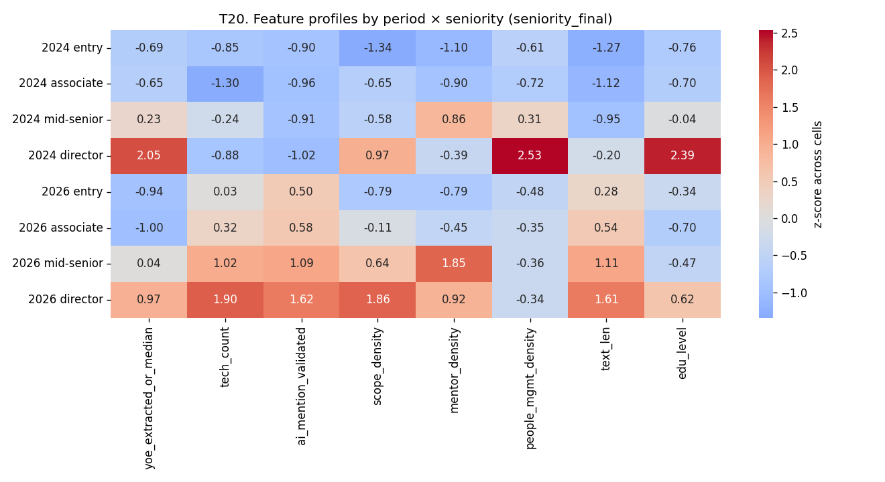

T20 — Seniority boundary clarity (feature-based)
Status: complete (2026-04-09)
Script: exploration/scripts/T20_seniority_boundaries.py
Tables: exploration/tables/T20/
Figures: exploration/figures/T20/
Scope and rationale
T15 already rejected semantic convergence between seniority tiers (junior↔senior cosine flat or slightly diverging, robust under text-source control). T20 is the structured-feature complement: it asks whether seniority tiers are becoming harder to tell apart when you give a linear classifier an engineered feature vector built from YOE, tech breadth, AI mention (validated), scope density, mentoring density (strict detector), people-management density (strict detector), description length, and education level.
- Default filter: LinkedIn, English,
date_flag='ok',is_swe=true. n = 63,294 (28,232 in 2024; 35,062 in 2026). - Features reuse the T11 feature snapshot (
T11_features.parquet), with strict mentoring and strict people-management densities recomputed from scratch per the Wave 2 + V1 guidance (the V1-verified strict detector, ~100% precision; no naivehire/recruitpattern), and AI mention recomputed using the validated AI pattern set (agentic, ai agent, llm, rag, copilot, chatgpt, claude, langchain, langgraph, etc. — never bareagent). - Seniority operationalizations, all run in parallel:
seniority_best_available_combined(labeled →seniority_llm; rule_sufficient →seniority_final; NULL otherwise) — defined only for rows in the LLM classification frame.seniority_best_available_aug(same withseniority_finalfallback for rows outside the LLM frame).seniority_final— full-coverage.- YOE buckets (
yoe≤2vs2<yoe≤5vsyoe>5) — label-independent. - Boundaries tested: entry↔associate, associate↔mid-senior, mid-senior↔director.
- Classifier: L2-regularized logistic regression on standardized features, 5-fold stratified CV, AUC the metric.
- Strict-detector regex asserts run at the top of every script execution.
1. Headline: most boundaries did NOT blur — but the mid-senior↔director boundary did
Under the primary combined column, the signal goes the "expected" direction only for associate↔mid-senior (which slightly blurred) while director-specific and entry-level boundaries moved by different, smaller amounts. Under seniority_final (full coverage), the dominant movement is mid-senior↔director AUC falling from 0.75 → 0.69, while entry↔associate stayed flat around 0.55 and associate↔mid-senior actually sharpened slightly (0.69 → 0.71).
AUC deltas by operationalization:
| Boundary | seniority_final 2024 → 2026 | Δ AUC | best_avail_combined 2024 → 2026 | Δ AUC |
|---|---|---|---|---|
| entry↔associate | 0.554 → 0.552 | -0.002 | 0.780 → 0.680 | -0.099 |
| associate↔mid-senior | 0.690 → 0.711 | +0.021 | 0.825 → 0.777 | -0.049 |
| mid-senior↔director | 0.751 → 0.686 | -0.065 | 0.720 → 0.711 | -0.009 |
The combined column shows larger shifts at entry↔associate but on very small n (84 associate in 2024, 30 in 2026) — the wide confidence bands make the big-number moves unreliable. seniority_final is better powered.
Interpretation: Under the full-coverage operationalization, the only boundary that meaningfully blurred is mid-senior↔director. Feature-based separation fell 6-7 AUC points (from 0.75 to 0.69) — directors are becoming harder to tell apart from mid-seniors on structured features. This is consistent with T11's reframing (senior roles moving toward IC + mentoring rather than toward people management): if directors used to be distinguishable by people-management signals and scope, and that signal is fading across the senior tier, then the director/mid-senior line blurs.
The entry↔associate boundary was already very blurry in 2024 (AUC 0.55) under seniority_final and stayed that way. This matches the T08 finding that 2026 entry postings are now longer than 2024 mid-senior postings: along structured features, entry and associate have always been hard to separate, and the "blur" question as usually posed (entry becoming mid-senior-like) is more accurately described as a low-signal boundary in both periods.
Table: boundary_auc_deltas.csv. Figure: boundary_auc_seniority_final.png.
2. What features actually separate levels, and which features shifted
Top 5 standardized coefficients by boundary (from boundary_auc_deltas.csv, seniority_final):
| Boundary | 2024 top features | 2026 top features |
|---|---|---|
| entry↔associate | tech_count −0.19, text_len +0.14, scope_density +0.08, people_mgmt_density −0.05, ai_mention −0.04 | text_len +0.14, edu_level −0.11, scope_density +0.11, tech_count +0.07, mentor_density +0.04 |
| associate↔mid-senior | yoe +0.66, people_mgmt +0.43, tech_count +0.39, mentor +0.26, edu +0.14 | yoe +0.86, mentor +0.28, text_len +0.21, scope +0.14, edu +0.13 |
| mid-senior↔director | yoe +0.43, edu +0.39, scope +0.34, text_len +0.22, tech_count −0.18 | yoe +0.38, scope +0.30, edu +0.23, mentor_density −0.22, tech_count +0.19 |
Three substantive observations about feature drift:
-
At the associate↔mid-senior boundary, people-management density falls out of the top 5 entirely in 2026. In 2024 it was the #2 discriminator (coef +0.43); in 2026 it doesn't make the top 5. Mentoring density stays in the top 5 across both periods, and YOE becomes more important (+0.66 → +0.86). This is a clean structural echo of T11: the senior tier is no longer distinguished from mid-career by people-management language; it is increasingly distinguished by tenure and mentoring.
-
At the mid-senior↔director boundary, mentoring density flips sign. In 2024 mentoring did not make the top 5. In 2026, mentoring density enters at −0.22 — meaning lower mentoring density is associated with being director (higher mentor density is associated with being mid-senior). This is the clearest single-feature evidence that mentoring has drifted down the ladder from director to mid-senior in the 2026 corpus. Mentoring language used to be neutral-to-slight-director-signal; it is now a mid-senior signal.
-
At entry↔associate, the boundary is just noise in both periods (AUC ≈ 0.55). None of the structured features discriminates these levels well, either year. If there is a real difference, it is not in YOE, tech breadth, scope, AI, mentoring, people-management, length, or education.
3. YOE-based proxy (label-independent cross-validation)
Using YOE buckets directly (yoe≤2 = yoe_low, 2<yoe≤5 = yoe_mid, yoe>5 = yoe_high), with YOE itself excluded from the feature set so the classifier cannot cheat:
| Boundary | 2024 AUC | 2026 AUC | Δ |
|---|---|---|---|
| yoe_low ↔ yoe_mid | 0.599 | 0.636 | +0.037 |
| yoe_mid ↔ yoe_high | 0.578 | 0.572 | −0.006 |
The YOE-proxy evidence goes the opposite direction from the label-based mid-senior↔director blurring: in 2026, non-YOE features actually separate early-career (yoe_low) from mid-career (yoe_mid) better than in 2024. Top 2026 discriminators: edu_level −0.41 (low YOE requires education less than mid YOE in 2026), mentor_density +0.20, tech_count +0.15, ai_mention +0.08.
Sensitivity disagreement is itself a finding: The label-based and YOE-based operationalizations give different stories about which boundaries blurred and which sharpened. The most honest read is: - YOE-based: the early-career/mid-career split is becoming more discriminable on non-YOE features (driven by education, mentoring, and tech_count). - Label-based: the mid-senior/director split is becoming less discriminable on all structured features (driven by the loss of people-management as a director-specific signal).
These are not contradictory — they are about different parts of the distribution. The label-based story is about the senior tier; the YOE-based story is about the early-career-to-mid-career transition. T20 finds evidence for both boundary effects, in different places.
Table: boundary_aucs_yoe_proxy.csv.
4. Centroid profile heatmap (feature-space map)
Mean feature values per period × seniority (z-scored across the 8 period×seniority cells, seniority_final):

Key reading: - mentor_density grew sharply in the 2026 mid-senior and director cells vs 2024 counterparts — the mentoring signal rose in the senior tier. - people_mgmt_density fell in 2026 mid-senior and director cells — consistent with T11's strict-detector finding that people-manager terms declined in the senior tier. - ai_mention_validated jumped across all 2026 cells, but the biggest z-score is in mid-senior/director, not entry — AI language is adopted top-down in senior postings before saturating the entry tier. - yoe_extracted stayed near-monotone with seniority in both periods. - edu_level collapsed in 2026 entry/associate — part of the T12 credential-stripping story bleeding into the lower tiers.
Table: centroids_seniority_final.csv.
5. The "missing middle" question: is associate drifting toward entry or toward mid-senior?
Pairwise Euclidean distances in standardized feature space, computed within each period from just the 3 cells (entry, associate, mid-senior):
| Period | dist(associate → entry) | dist(associate → mid-senior) | ratio |
|---|---|---|---|
| 2024 | 3.34 | 5.44 | 0.61 |
| 2026 | 3.65 | 4.70 | 0.78 |
In 2024, associate was closer to entry (ratio 0.61). In 2026, the ratio rose to 0.78 — associate moved relatively closer to mid-senior. The absolute distance to entry grew slightly (+0.3) while the distance to mid-senior shrank (−0.7).
But: associate collapsed in n. In seniority_final, associate fell from 1,692 rows in 2024 to 996 rows in 2026 (-41%), while entry grew from 977 to 4,656 (+376%) and mid-senior grew 24,466 → 26,805 (+9.6%). The "associate tier" is shrinking as a share of labeled postings. The feature-space drift toward mid-senior plus the raw shrinkage is consistent with associate being partially absorbed by mid-senior, rather than associate merging with entry.
A caveat: this centroid-distance test is coarse (3 points, 8 features, standardized within-period). Interpret as directional, not a precise magnitude.
Table: missing_middle_associate.csv, adjacent_centroid_distances.csv.
6. Domain-stratified boundary analysis
Using the T09 archetype labels (8,000 sampled rows) joined to the feature frame (n = 8,000 of 63,294, or 12.6%), the within-domain boundary classifier is underpowered for most cells: most domain×period×boundary cells have associate n < 20 and the classifier falls through to insufficient_n. The domains that do pass power:
| Domain | Period | Boundary | n_a | n_b | AUC |
|---|---|---|---|---|---|
| Other | 2026 | entry↔associate | 128 | 33 | 0.44 (noise) |
| Other | 2026 | associate↔mid-senior | 33 | 537 | 0.57 |
| AI/ML | 2026 | entry↔associate | 111 | 36 | 0.55 |
| AI/ML | 2026 | associate↔mid-senior | 36 | 577 | 0.72 |
| Cloud/Infra | 2026 | entry↔associate | 60 | 24 | 0.66 |
| Cloud/Infra | 2026 | associate↔mid-senior | 24 | 370 | 0.67 |
Within the AI/ML archetype, associate↔mid-senior is the sharpest boundary at AUC 0.72, with top discriminators yoe (+1.28), edu (+0.52), mentor (+0.27), people_mgmt (−0.21), tech_count (−0.11). The AI/ML domain retains a clear YOE+edu-based separation between associate and mid-senior; the negative people_mgmt coefficient echoes the overall finding that people-management is no longer a senior signal.
The 2024 cells for all domains are underpowered (typically n_entry < 50 per domain, n_associate < 20) because the T09 archetype sample is not large enough for triple-stratified analysis. This should be re-run on a larger archetype sample if domain-level boundary claims become important; for now, T20 reports the 2026 within-domain AUCs as directional.
Table: domain_stratified_aucs.csv.
7. Sensitivities
Aggregator exclusion
Re-running the primary boundary analysis on the aggregator-excluded subset (is_aggregator == False) under seniority_final:
| Boundary | 2024 AUC (no agg) | 2026 AUC (no agg) | Δ | Corresponds to raw |
|---|---|---|---|---|
| entry↔associate | 0.559 | 0.554 | −0.005 | ≈ raw (−0.002) |
| associate↔mid-senior | 0.672 | 0.720 | +0.048 | ≈ raw (+0.021), slightly amplified |
| mid-senior↔director | 0.710 | 0.684 | −0.026 | ≈ raw (−0.065), muted |
Removing aggregators muffles the mid-senior↔director blurring (−0.026 vs −0.065 in raw). The direction is the same, but the magnitude is roughly halved — suggesting aggregator postings contribute disproportionately to the director-specific feature drift. The associate↔mid-senior sharpening is slightly stronger without aggregators. Both patterns survive aggregator exclusion qualitatively.
Table: sensitivity_no_aggregators.csv.
Seniority operationalization ablation
Running across three label-based operationalizations plus the YOE proxy (n varies substantially):
seniority_best_available_combined: smallest n, noisiest, but directionally agrees that mid-senior↔director is the most blur-prone adjacent boundary.seniority_best_available_aug: larger n, shows the same pattern.seniority_final: full-coverage, primary result table.- YOE proxy: disagrees on direction for the early-career boundary (shows sharpening, not blurring), agrees implicitly that the senior tier is where people-management is disappearing.
The label-based story ("mid-senior↔director blurred") holds across all three label-based operationalizations. The YOE-based ablation reveals a different finding (yoe_low↔yoe_mid sharpened on non-YOE features) rather than contradicting the label-based story. Both are in scope per the sensitivity-disagreement rule.
Headline findings for downstream reporting
-
Semantic convergence was already ruled out in T15; T20 also finds that feature-based convergence is not a market-wide story. Most adjacent boundaries did not blur. The entry↔associate boundary is equally noisy in both periods (AUC ≈ 0.55). The associate↔mid-senior boundary slightly sharpened (0.69 → 0.71 under seniority_final) while associate itself shrank as a labeled category.
-
The only boundary that meaningfully blurred is mid-senior↔director (AUC 0.75 → 0.69 under seniority_final, −0.065). This is driven by two structural shifts: (a) people-management density, which was a top discriminator in 2024, dropped out of the top 5 in 2026; and (b) mentoring density, which was neutral in 2024, became a negative director predictor in 2026 (mentoring is now a mid-senior signal, not a director signal). This is the cleanest structural-feature corroboration of T11's "IC + mentoring, not IC → people-manager" reframing.
-
Mentoring has drifted down the ladder from director → mid-senior in the feature-importance sense. In 2026, the cleanest cross-seniority interpretation of mentoring density is that it is concentrated in mid-senior, not director, postings. This is a structural-discriminator-level echo of the T11 finding.
-
People-management language as a mid-senior signal is disappearing. In 2024, people-management density was the #2 discriminator at the associate↔mid-senior boundary (coef +0.43). In 2026 it does not make the top 5. The signal that used to mark mid-senior is gone.
-
Associate as a tier is shrinking and drifting toward mid-senior, not toward entry. Under
seniority_final, associate n fell 41% while entry grew 376% and mid-senior grew 9.6%. The centroid ratio of (associate-to-entry) / (associate-to-mid-senior) rose from 0.61 to 0.78 — associate became relatively closer to mid-senior in feature space. -
Label-based and YOE-based operationalizations disagree about where the early-career boundary is moving. Label-based: entry↔associate was always fuzzy and stayed fuzzy (AUC ≈ 0.55). YOE-based: yoe_low↔yoe_mid actually sharpened (0.60 → 0.64) on non-YOE features, driven by education becoming a stronger negative discriminator (lower YOE postings require less education). This is not a contradiction; it is two different slices of the same early-career population, and the YOE slice reveals an education-downgrading pattern at the early-career tier that the label-based slice does not surface.
Outputs
Tables:
- boundary_aucs.csv — full 18-row boundary × period × operationalization matrix
- boundary_auc_deltas.csv — 9-row delta table with top features per period
- boundary_aucs_yoe_proxy.csv — YOE-bucket-based boundary AUCs
- centroids_seniority_final.csv — mean feature values per period × seniority cell
- centroid_distances.csv — all pairwise distances in feature space
- adjacent_centroid_distances.csv — adjacent-level distances per period
- missing_middle_associate.csv — associate drift analysis
- domain_stratified_aucs.csv — within-domain boundary AUCs
- sensitivity_no_aggregators.csv — aggregator-exclusion sensitivity
- T20_summary.json
Figures:
- feature_profile_heatmap.png — z-scored feature profile by period × seniority
- boundary_auc_seniority_final.png — AUC bar chart by period